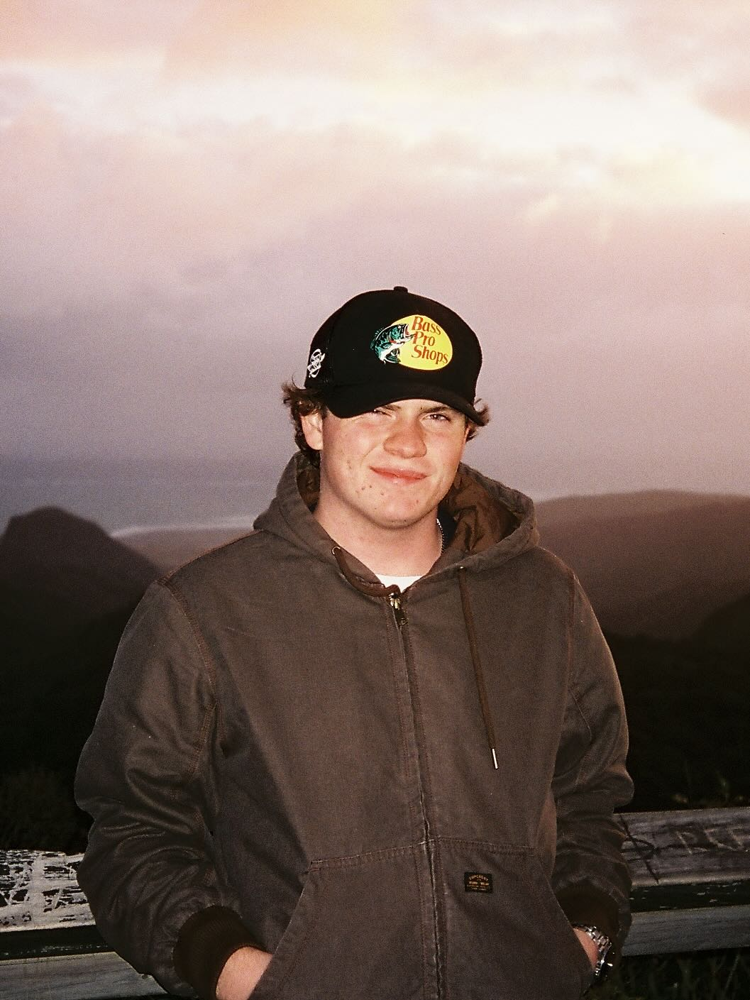

About Josh
Josh McGuigan is a 21 year old night sky and landscape photographer from Aotearoa/New Zealand. His work revolves around chasing some of the grandest and most serene landscapes our planet has to offer. A night sky educator by profession, he has developed a unique perspective that stresses the importance of dark sky preservation while also trying to make it accessible to the masses. His presence in the astro-tourism industry have helped his work connect with of 10s of 1000s of people, outreach numbers he hopes will increase in the coming years.
I’ve spent all of my adult life travelling the globe, trying to immerse myself in new experiences and cultures. My travels were key to refreshing the outlook I had on life as a teenager, and nudged me into this ‘nomad’ life. I’m currently living in the Aoraki/Mackenzie International Dark Sky Reserve, in New Zealand’s South Island. This area is home to some of the world’s most pristine night skies, dramatic landscapes and many of the globe’s most photographed (there are too many to list!). If you enjoy my work, please reach out and connect with me! I love meeting new people from all walks of life, and hearing how my work resonates with different individuals is always a great feeling. - Josh